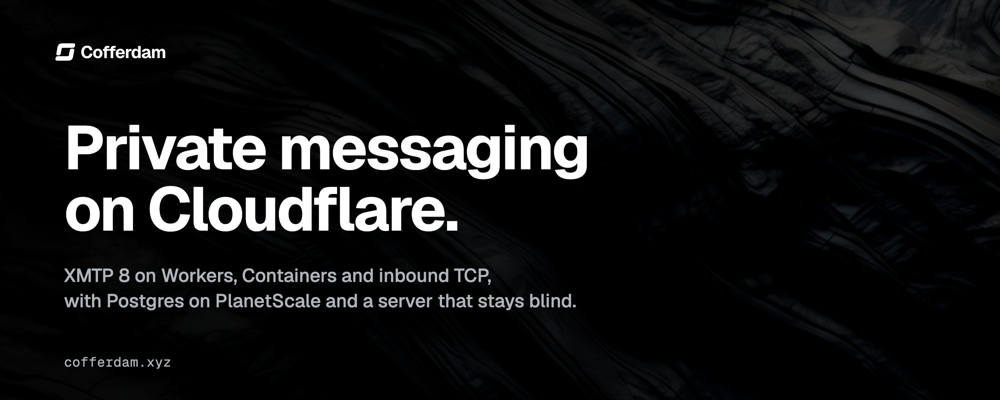
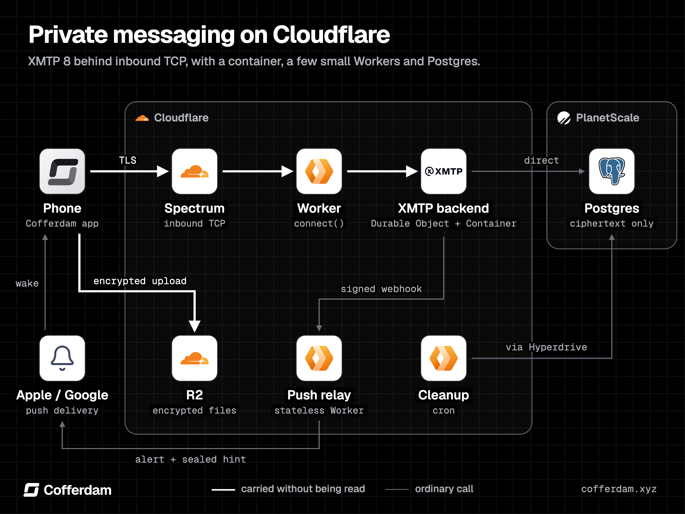
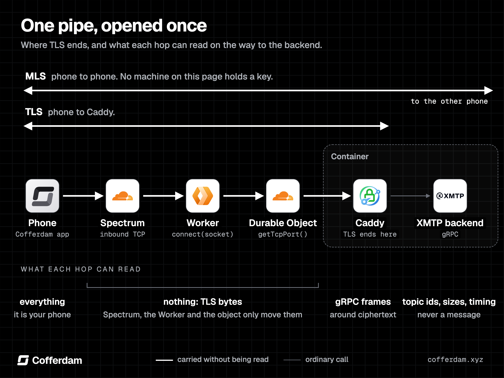
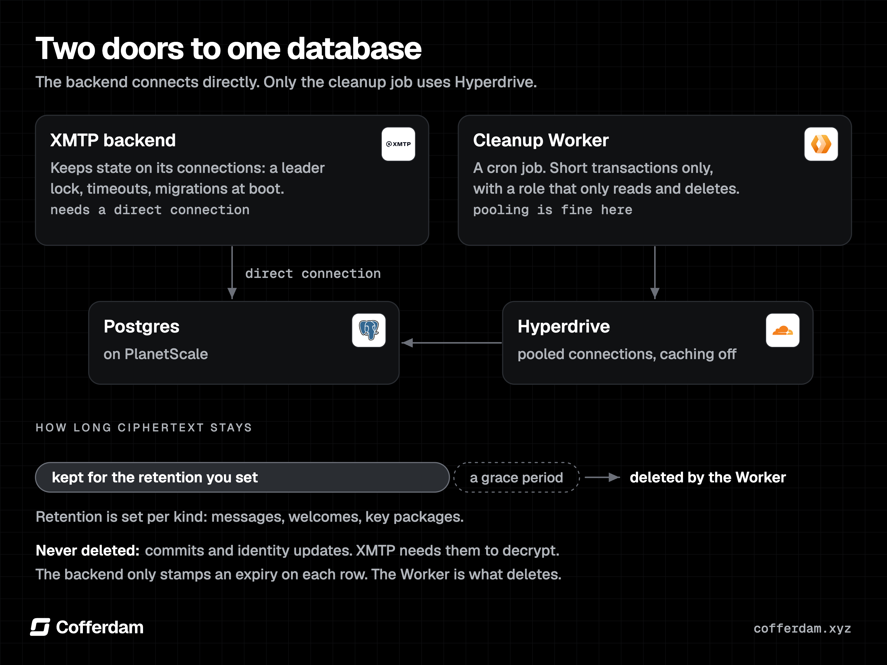
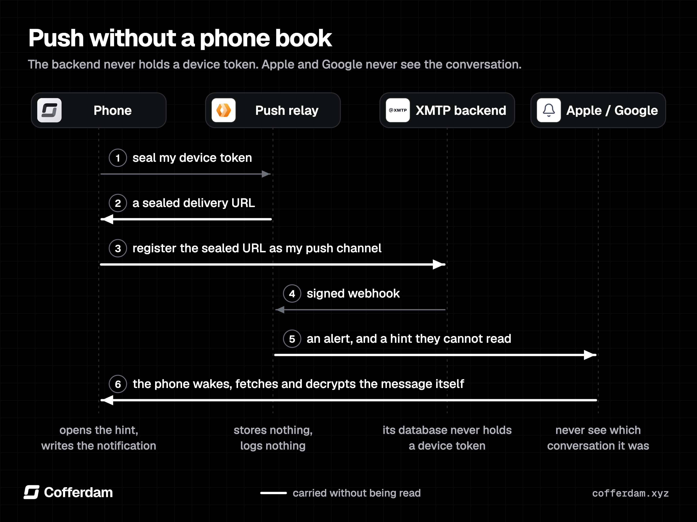
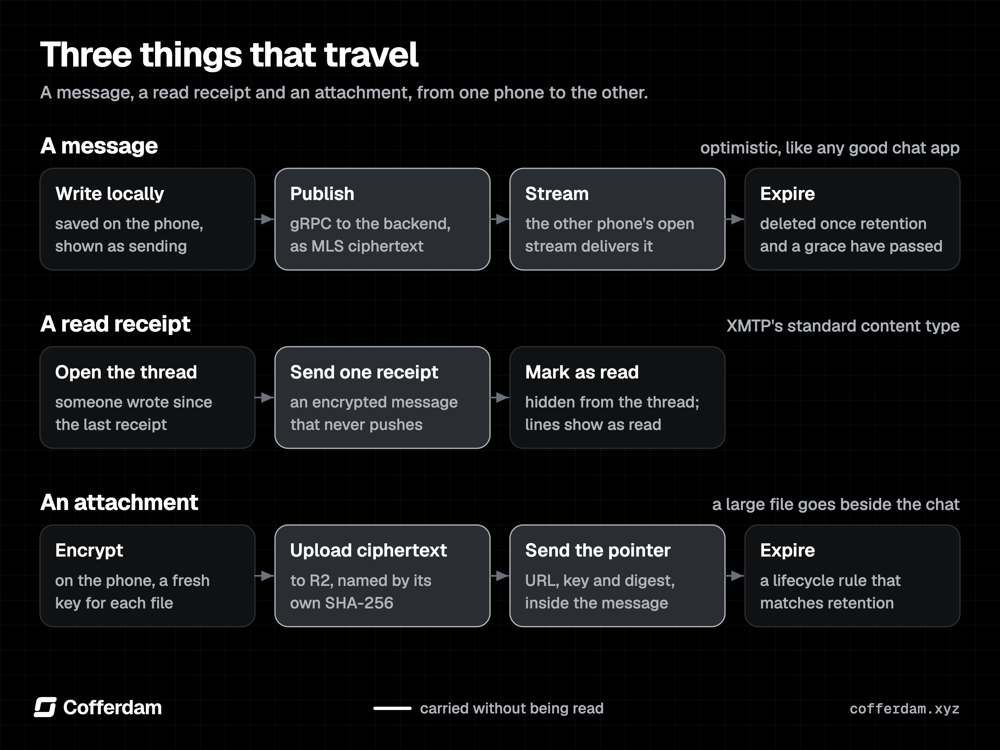

Paste sheet for X's article editor
Private messaging on Cloudflare: XMTP, inbound TCP and a server that stays blind
Each button puts one piece on the clipboard, ready to paste into X. Nothing on this page posts anything.
- On x.com, open Articles, then Write. Upload
00-cover.pngas the cover. - Copy the title and paste it into the title field.
- Copy the body and paste it into the editor.
- At each
[image: …]line, choose Insert, Media, add that file and its alt text, then delete the line. - At each
[code …]line, choose Insert, Code, paste that sample with Copy code, then delete the line. - Preview, publish, then post the announcement with the article's link.
1 · Title
Private messaging on Cloudflare: XMTP, inbound TCP and a server that stays blind

2 · Body
A paste carries no images and no code into X's editor, so the body holds a marker for each of the 5 diagrams and 11 code samples.
End-to-end encrypted messaging needs a server, and the server is where privacy usually leaks: who talks to whom, from which address, at what time. This is a walk through one way to run XMTP on Cloudflare so that the server carries messages without learning about the people sending them.
The design rule: the server is blind by default.

Why XMTP
Writing your own end-to-end encryption is the riskiest thing a messaging feature can do. XMTP gives an app MLS (RFC 9420), the IETF standard for group messaging: forward secrecy, post-compromise security, and post-quantum protection on the messages that welcome a device into a conversation. The keys live on the devices.
XMTP 8 is self-hosted: you run the backend, and everyone in a conversation uses the same deployment. Your users message each other, not users of other XMTP apps. That is also what makes a blind server possible, because the operator decides what the server keeps:
- The backend never sees a client's IP address.
- Nothing you run logs a request, so no log pairs a conversation with a connection.
- The backend checks one app-level API key. It proves "the app", never "this person".
- Messages are deleted after a fixed retention period.
- It holds no contact list. Who knows whom lives on the devices.
One limit to state plainly: Cloudflare's edge terminates the TCP connection, so it sees the client's address like any network in front of a server. The claim is about what reaches and stays in the system you operate.
The backend is one binary that speaks gRPC and stores ciphertext in Postgres. It lives in the libxmtp repository and is configured by one TOML file. The client SDK takes your backend's URL and the API key when it creates a client. The job is getting a phone's gRPC stream to that backend without anything in between learning more than it must.
The missing piece was a raw socket
XMTP clients hold a long-lived gRPC stream over TLS. Cloudflare's inbound TCP for Workers (public beta) makes that possible: a Spectrum application can name a Worker as its origin, and the Worker gets a connect() handler with a raw socket.
There are two connect() handlers and two hops. The Worker's handler receives the client's socket, opens a second socket to a Durable Object, and pipes one into the other. The whole public surface of the messaging server can be this small:
// The Worker. env.BACKEND is a Durable Object namespace.
export default {
async connect(socket: Socket, env: Env): Promise<void> {
const upstream = env.BACKEND.getByName('primary')
.connect(`backend:${PORT}`, PASSTHROUGH);
await splice(socket, upstream);
},
// No HTTP surface: health is gRPC only, on the stream.
async fetch(): Promise<Response> {
return new Response(null, { status: 404 });
},
};splice pipes both directions and closes both when either side ends:
export const PASSTHROUGH: SocketOptions = {
allowHalfOpen: true,
secureTransport: 'off',
};
export async function splice(a: Socket, b: Socket) {
await Promise.allSettled([
a.readable.pipeTo(b.writable),
b.readable.pipeTo(a.writable),
]);
await Promise.allSettled([a.close(), b.close()]);
}Calling connect() on the stub runs the Durable Object's own connect() handler. The object extends DurableObject from cloudflare:workers, has a container attached to it in the Worker's configuration, and opens the second hop to a port inside that container:
// The Durable Object that owns the container.
override async connect(socket: Socket): Promise<void> {
await this.ensureStarted();
const upstream = await openUpstream(() =>
this.ctx.container!
.getTcpPort(PORT)
.connect(`10.0.0.1:${PORT}`, PASSTHROUGH),
);
await splice(socket, upstream);
}The two address strings follow Cloudflare's bidirectional gRPC example, which is the reference for this setup. openUpstream is a small retry loop with backoff: a cold start runs database migrations before the backend listens, so a phone that connects during one waits instead of failing.
This sample uses one named object and one container. The backend itself is stateless, so scaling out means more instances behind the same name scheme.
One pipe, opened once

Spectrum passes the TLS stream through untouched, so TLS ends inside the container and nowhere else. Spectrum, the Worker and the Durable Object move encrypted bytes they cannot read.
Inside the container, a small reverse proxy (Caddy here) ends TLS and forwards plain HTTP/2 to the backend on localhost:
{$TLS_DOMAIN} {
reverse_proxy h2c://127.0.0.1:{$BACKEND_PORT} {
# Stream every frame as it arrives:
# gRPC server streams stay open.
flush_interval -1
transport http {
versions h2c
}
}
}Three properties fall out of this shape:
- No client IP at the backend. Nothing adds a PROXY protocol header, so the backend has no address to log, even by accident.
- No request log in anything you run. The Worker logs nothing, the proxy has no access log, and the backend's request logger is off.
- A certificate with no DNS credential. Phones need a publicly trusted certificate. Because the TLS handshake passes through, an ACME TLS-ALPN-01 challenge reaches the proxy through the same pipe the phones use, so the proxy issues and renews its own certificate. The container's disk does not survive a restart, so its start script copies the certificate store from object storage before the proxy starts and copies it back afterwards.
Under all of it is MLS. Even with TLS open, what the proxy and the backend see is ciphertext addressed to opaque topic ids.
A container, supervised by a Durable Object
The container holds the reverse proxy and XMTP's published backend binary. The Durable Object is its supervisor: it starts the container, restarts it when it exits, and is the only way in.
A backend that retries a failing database connection instead of exiting will never pick up a corrected secret on its own. So ensureStarted, which runs before every connection and on a timer, stores a fingerprint of the environment the container started with and restarts it when a secret or variable changes:
const { storage } = this.ctx;
const fingerprint = await envFingerprint(env);
if (container.running) {
const before = await storage.get<string>(STARTED_WITH);
if (before === fingerprint) return;
await container.destroy();
}
container.start({ enableInternet: true, env });
await storage.put(STARTED_WITH, fingerprint);The container needs outbound internet for the database and for certificate issuance.
Two doors to one database

The backend stores everything in Postgres, here on PlanetScale.
It is tempting to put every connection through Hyperdrive. Hyperdrive pools connections, which is right for short queries from Workers and wrong for a server that keeps state on its connections: statement timeouts, a lock that elects one push sender, migrations at boot, a long-lived listener. So there are two doors.
The backend connects directly, never through a transaction-mode pooler. In its TOML config:
[database]
# One connection string, primary and direct:
# the backend keeps session state.
url = "env:DATABASE_URL"The cleanup goes through Hyperdrive. The backend stores three kinds of expiring rows: group messages, welcomes (the message that adds a device to a group) and key packages (the keys a device publishes so others can add it). Each kind has its own retention. The backend stamps an expiry on every row and never deletes anything. Deleting is the operator's job, so a Worker on a cron does it with the pg client, with query caching off and a database role that can only read and delete:
async function withClient<T>(
env: Env,
ctx: ExecutionContext,
use: (query: Query) => Promise<T>,
) {
const client = new Client({
connectionString: env.HYPERDRIVE.connectionString,
});
await client.connect();
try {
return await use(async (text, params) =>
(await client.query(text, params)).rows);
} finally {
ctx.waitUntil(client.end());
}
}The backend also runs a push dispatcher, which walks new rows in order and records how far it got in a one-row table, push_cursor. The delete has to respect it. One statement per batch (trimmed here), written so it can never take something a phone still needs:
WITH doomed AS (
SELECT e.sequence_id
FROM envelopes e
WHERE e.expiry_ns IS NOT NULL
AND e.is_commit_or_proposal = false
-- now, minus a grace period
AND e.expiry_ns < $cutoff
AND e.sequence_id < (
SELECT sequence_id FROM push_cursor WHERE singleton
)
ORDER BY e.sequence_id
LIMIT $batch
FOR UPDATE OF e SKIP LOCKED
)
DELETE FROM envelopes d USING doomed
WHERE d.sequence_id = doomed.sequence_idNever a row without an expiry, and never a commit or proposal: those change a group's keys, they are permanent by XMTP's design, and losing one breaks decryption. Never a row the push dispatcher has not reached yet. Never before the grace period has passed. If the dispatcher stalls, deletion stops with it, and the job raises an alert instead of quietly keeping data longer than promised.
Push without a phone book

Push is where private messengers usually leak. Someone has to hold a table that maps a device to its conversations, and Apple or Google see a hint about every message.
XMTP's backend can deliver push as a signed webhook to a URL the phone registers. A sealed relay builds on that. The phone generates a signing key, and asks a stateless Worker, the push relay, to seal its device token and that key into a URL. It registers the URL with the backend, together with the signing key. The backend's database holds a URL and nothing that names a phone:
// In the relay. The delivery URL carries:
// version | key id | iv | AES-256-GCM(device record)
const ct = await crypto.subtle.encrypt(
{ name: 'AES-GCM', iv, additionalData: aad(kid) },
key,
body,
);The sealing key is a secret only the relay holds. When a message arrives, the backend calls the URL with a webhook signed by the phone's signing key. The relay unseals the URL, checks the signature against the key it finds inside, and forwards an alert. It has no storage binding of any kind and writes no logs, so what it sees for the length of one request is gone when the request ends.
The alert carries no content, and Apple and Google do not get the conversation either. The relay encrypts the hint under a key derived from the signing key, which the push providers never see:
// hintKey = HKDF-SHA256(the signing key, a fixed label)
// hint = iv | AES-GCM(hintKey, { topic, sequence id })The phone wakes, derives the same key, opens the hint, fetches the message from the backend, decrypts it with its own MLS keys and writes the notification itself. On iOS that work happens in a Notification Service Extension; on Android, in the handler for a data message. Apple and Google deliver a wake-up. They never learn which conversation it was for.
Messages, read receipts and attachments

Messages are optimistic: written to the phone's local database first, shown as sending, then published. The other phone holds one open stream (streamAllMessages in the SDK) with catch-up built in, so there is no polling and no second socket to maintain. A message written offline is published when the connection returns.
Read receipts are a standard XMTP content type, xmtp.org/readReceipt:1.0: an ordinary encrypted message the app hides from the thread. In the app's SDK wrapper:
/** XMTP's standard read receipt, never pushed. */
async sendReadReceipt(id: string): Promise<void> {
const conversation = await this.get(id);
await conversation.sendReadReceipt({ shouldPush: false });
}The app sends one when a thread is opened and someone wrote since the last receipt. To the server a receipt is one more opaque envelope, and shouldPush: false means it never wakes anyone's phone. Replies and reactions are standard content types too, so none of this needs a custom protocol.
Attachments go beside the chat, using XMTP's remote attachment content type. The phone encrypts the file and asks the backend for a short-lived presigned upload URL. It uploads the ciphertext to R2 with that URL, then sends the file's URL, key and digest inside the encrypted message. The object's name is the SHA-256 of the ciphertext, so a bucket listing tells you nothing: no user prefix, no conversation id, bytes nobody without the message can open. A lifecycle rule on the bucket matches message retention, so files expire with the conversation that carried them.
Pitfalls
- A pooler port will boot and then break. A transaction-mode pooler accepts the backend's connection and then fails on session state. Use the direct endpoint, and reject the pooler's port in configuration before the container starts.
sslrootcert=systemmeans two things. libpq reads it as "the system trust store". The backend's Rust driver, sqlx, reads it as a file path and fails before it dials. End the URL atsslmode=verify-full.- Certificate authorities rate-limit issuance. A restart loop with an empty certificate store can use up a week's allowance in minutes. Restore the store before the proxy starts, and refuse to start if that read fails for any reason other than a first boot.
What each part can see
That is the whole system: one container running software you did not write, a few small Workers you did, one Postgres and one bucket. The way to check a design like this is part by part, asking what each piece can see and what it keeps.
- Cloudflare's edge sees the client's address and an encrypted stream. It cannot read the stream.
- The Worker and the Durable Object see TLS bytes passing through. They read nothing and log nothing.
- The reverse proxy sees gRPC frames around ciphertext, on a socket that carries no client address. It keeps no access log.
- The backend sees the app's API key, opaque topic ids, sizes and timing. It never sees a client address, a contact list or a message.
- Postgres holds ciphertext, a sealed push URL for each device that asked for one, and public identity records. Messages, welcomes and key packages stay for their retention and a grace period. Commits and identity updates stay for good.
- The cleanup Worker can read and delete rows, and nothing else.
- The push relay sees a device token for the length of one request and keeps nothing.
- Apple and Google see that a device was woken, and when. They cannot tell which conversation it was for.
- The bucket holds encrypted files named by their own hash, for as long as messages are kept.
What a blind server does not give you
Blind is not anonymous, and the difference is worth stating exactly.
- Content is protected by cryptography. Metadata is protected by what you choose not to keep. The server's operator cannot read a message, because it never holds a group key. But XMTP's security notes say what a backend operator can observe: topic ids, request timing, request size and connection metadata, and that query patterns can reveal relationships. This design keeps the client's address away from the backend and writes no log, so there is nothing to look up afterwards. An operator who turned logging back on would have it again. If you promise a blind server, the configuration is part of the promise: review a change to it the way you review code.
- Some records are permanent. Commits and identity updates never expire, by XMTP's design. The identity log lists every inbox, the identifier it was created with and every device key it has had. Create inboxes with an identifier that says nothing else about the person, because it cannot be taken back.
- The raw-socket path is new. Inbound TCP for Workers is a public beta, so expect its details to change.
Where to start
- The pipe first. Follow Cloudflare's bidirectional gRPC example until a gRPC health check answers through Spectrum, the Worker and the Durable Object. Add nothing else until it does.
- Then the certificate store. Save and restore it before the container has restarted more than a few times, or the issuance limit will stop you for days.
- Then the cleanup, with its alert, before real messages exist. A retention promise is only true once something deletes.
- Push last. Messaging works without it while the app is open, and the relay is the one part here with a design of its own.
None of the parts is large. What makes the server blind is the sum: every piece that touches a message either cannot read it or is built to forget it.
3 · The post that announces it
Replace ARTICLE_LINK with the article's URL. Attach 01-architecture.png with its alt text.
How to run XMTP on Cloudflare so the server carries messages without learning who sends them. Inbound TCP for Workers, a container behind a Durable Object, two doors to one Postgres, and push that Apple and Google cannot read. Code and diagrams: ARTICLE_LINK